Fringing the coast of Kerala, and winding far inland, is a vast network of lagoons, lakes, rivers and canals. These backwaters are both the basis of a distinct lifestyle and a fascinating thoroughfare. Travelling by boat along the backwaters certainly proved to be one of the highlights of our visit. There were three crew on our boat: captain, cook and general dogsbody. We could swim from the boat and our delicious food was served under cover of its banana leaf canopy. !
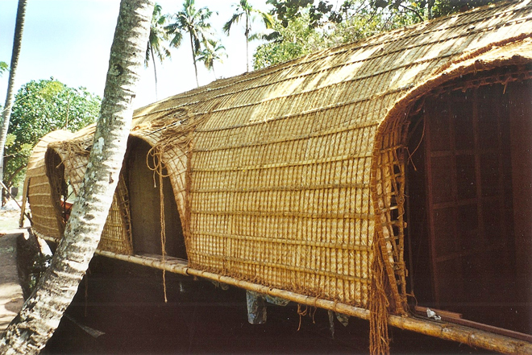
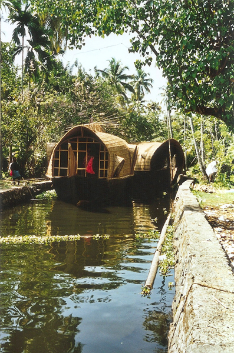
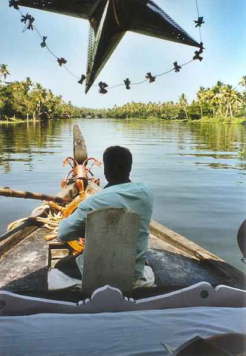
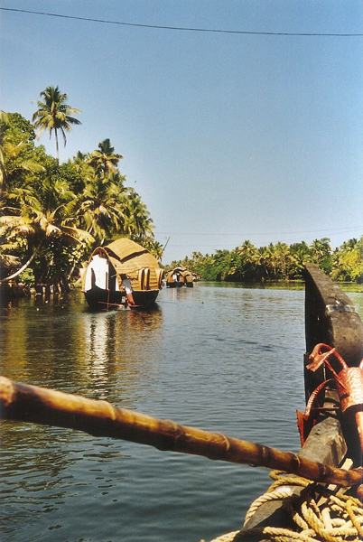
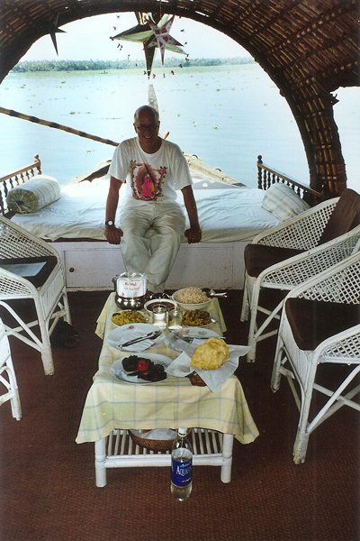
To the casual eye, the spread of water hyacinth looks attractive but, in fact, this is dangerous as it spreads so prolifically that it now clogs many stretches of the water and causes great disruption for the boat operators.
On our trip we visited a small village where we bought provisions for dinner - fruit, vegetables, fish and tapioca which was not the delicious pudding I remember from school. This was served with chilli flakes. !
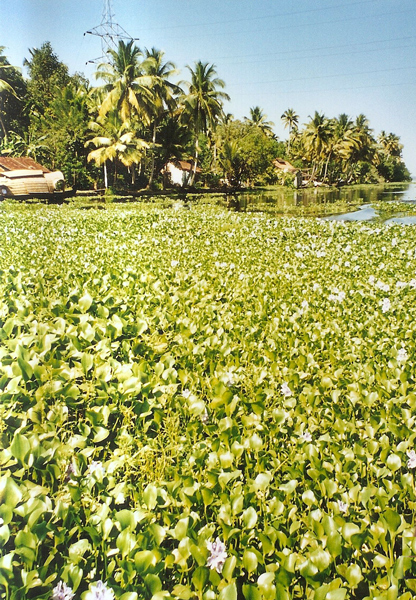
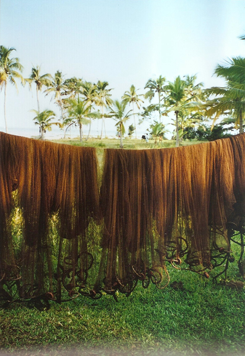
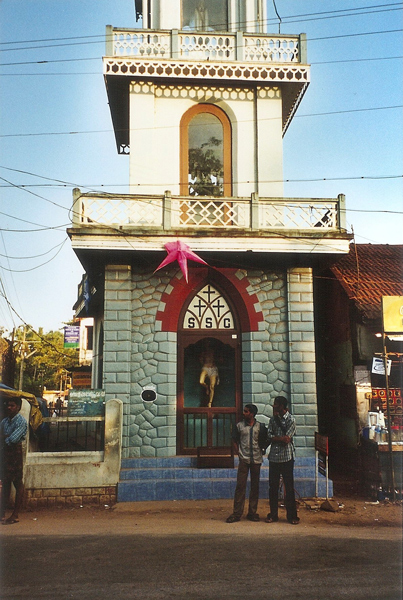
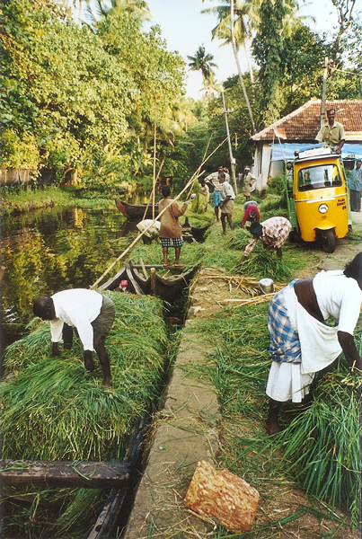
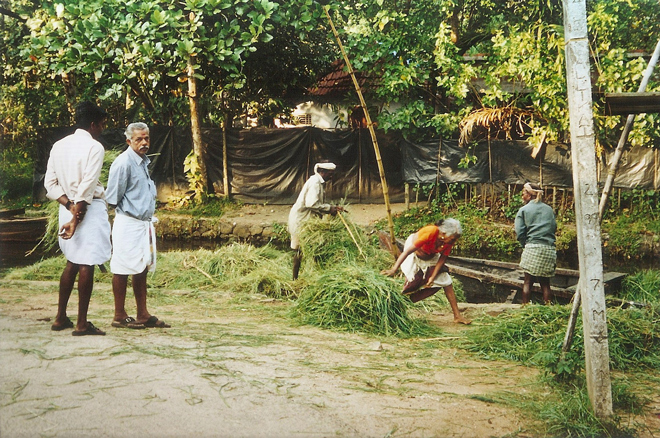
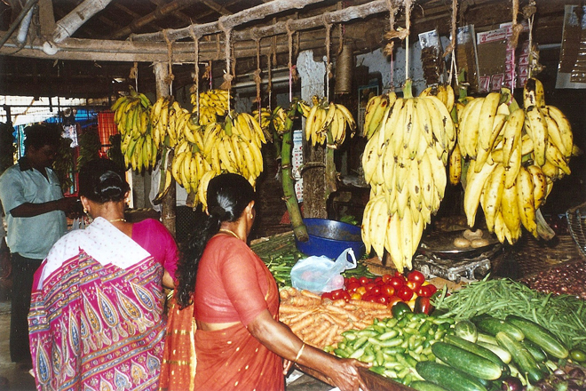
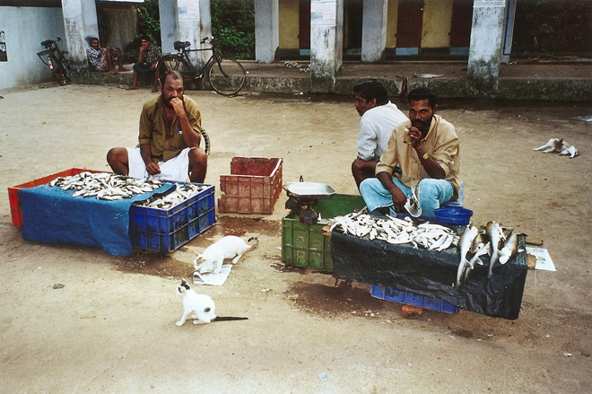
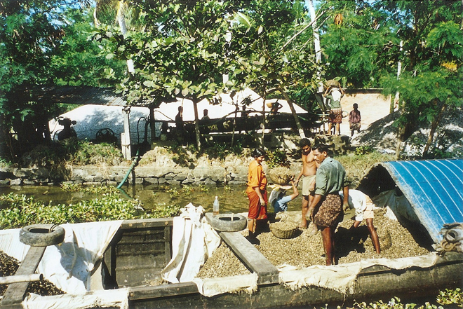
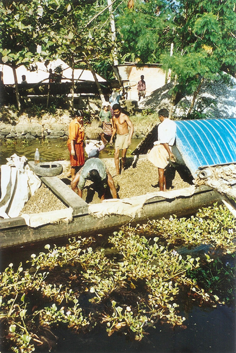
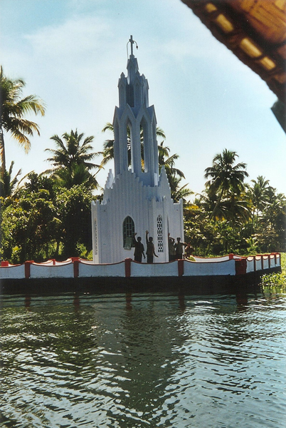
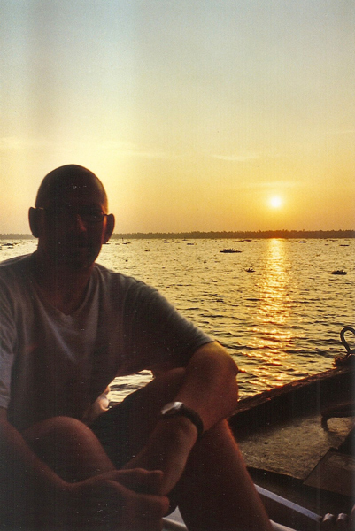
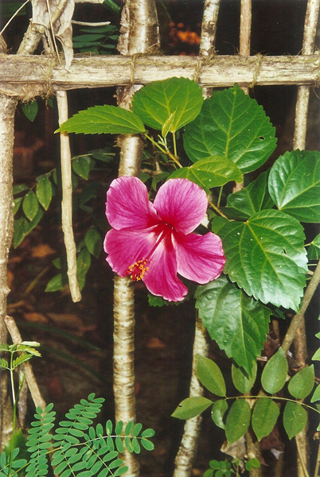
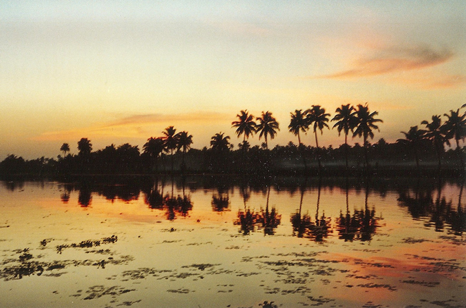
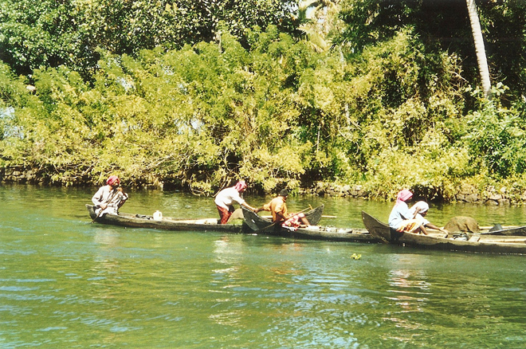
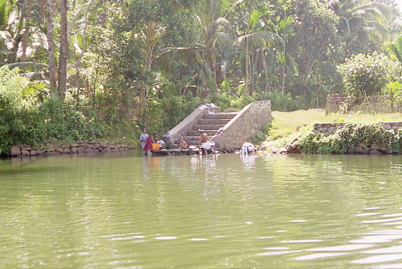
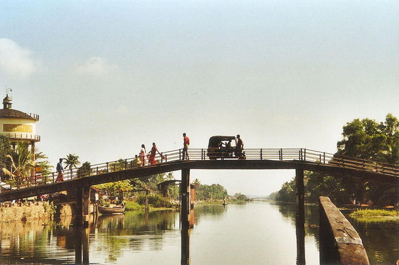
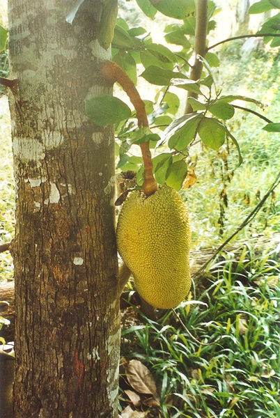
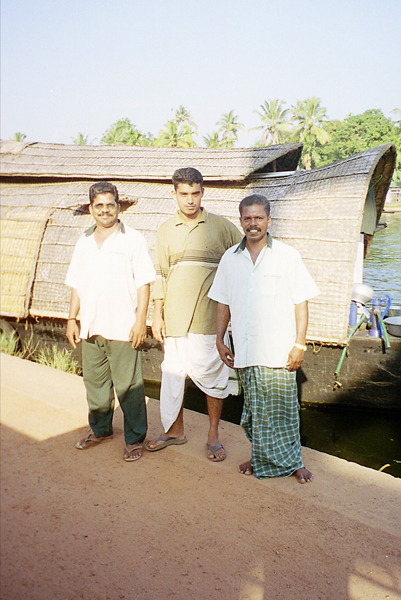
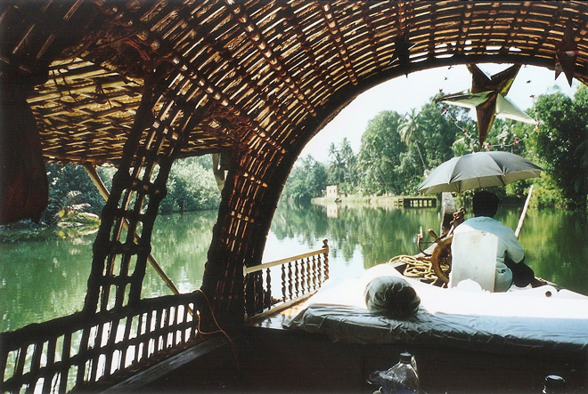
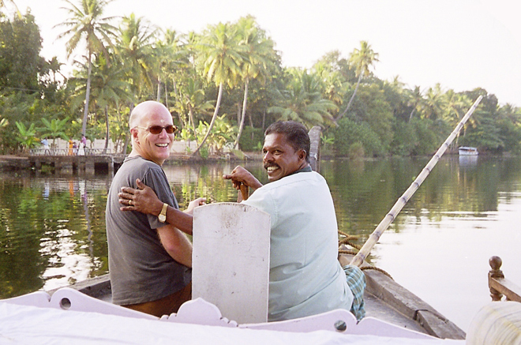
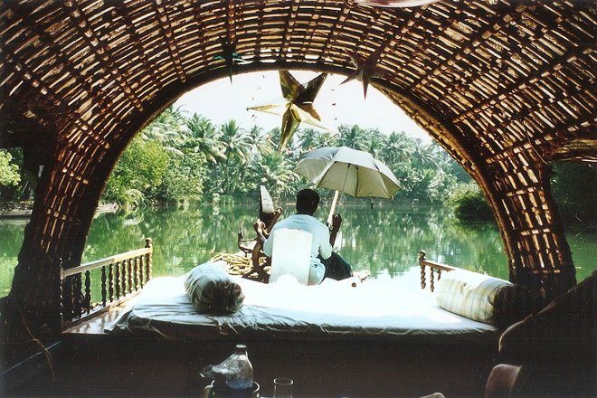